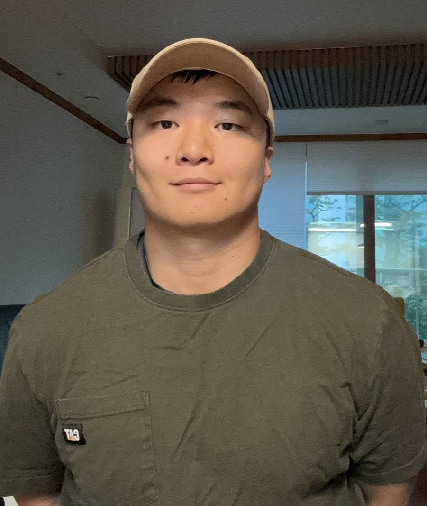

Jae Choi

About
I am a Ph.D. student in Computer Science at Iowa State University advised by Drs. Andrew Miner and Gianfranco Ciardo. I research decision diagrams and related applications in a broader field of formal methods. One day I hope to claim computability and complextiy as I decided to pursue graduate study after taking Dr. Andrei Migunov's Theory of Computation at Drake University. The graduate version of this course, also named Theory of Computation taught by Andrei's advisor Jack Lutz at Iowa State, is also equally life changing. However, I do have to note that my knowledge in such topic is still at its infant, if I am being generous.
Google ScholarOrcid
I am currently taking a short--term break in Korea, catching up with my family, friends, along with my kitty (meow).
Besides wrestling with computers all day, I also do enjoy wrestling people in baggy pajamas (Judo). Although most of the time, I am the one getting tossed to the floor.
I log my progress on training and random thoughts.
I like the simplicity and minimalness. Every human can benefit from nomadic life style in this era (personal opinion - not a doctor). Therefore, I decided to use only basic html and https://latex.vercel.app/ to create this site. I can assure you it has nothing to do with my laziness ;)
Publication
-
J. Choi and A. S. Miner, " Binary Decision Diagrams Unchained ," Proc. 26th Conf. Formal Methods in Computer-Aided Design (FMCAD 2026), p. 439, 2026.
Honors
-
Teaching Exellence Award Spring 2025 link to certificate
Iowa State University, Ames, Iowa -
Oustanding Senior in Computer Science Spring 2023
Drake University, Des Moines, Iowa
Contact
Best way to reach me is via email, I respond emails faster than my texts :)
Email: jaehyeok AT iastate DOT edu